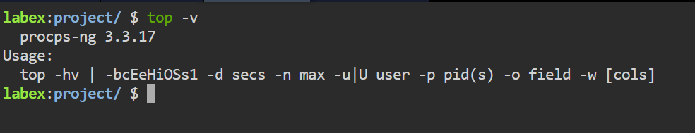

kill
The kill command sends signals to terminate processes manually.
kill -9 [PID]
Screenshot:

Your comprehensive guide to essential Linux commands for networking and connectivity.
Welcome to the Linux Commands Guide! This resource is designed to help beginners and advanced users alike navigate the world of Linux command-line tools. Whether you're looking to manage system processes, configure networks, or transfer files securely, this guide covers the most essential commands to improve your workflow and increase productivity.
Each command is explained with examples, along with screenshots to help you visualize the output and use cases. Explore the different sections below to learn more about key Linux commands.
The top command displays real-time system processes, CPU, and memory usage.
top
Screenshot:
The kill command sends signals to terminate processes manually.
kill -9 [PID]
Screenshot:
The ifconfig command displays or configures network interfaces.
ifconfig
Screenshot:

The ping command tests the reachability of a host on a network by sending ICMP echo request packets and waiting for a reply.
ping [hostname/IP]
Screenshot:

The ssh command allows secure access to a remote system over an encrypted connection.
ssh user@hostname
Screenshot:

The scp command securely transfers files between local and remote systems.
scp source_file user@hostname:destination_path
Screenshot:

The curl command transfers data from or to a server using protocols like HTTP, FTP, etc.
curl [URL]
Screenshot:

The diff command compares files line by line and shows the differences.
diff file1 file2
Screenshot:

The head command displays the first few lines of a file.
head -n [number_of_lines] [file]
Screenshot:

The tail command displays the last few lines of a file, with an option to keep the display updated as the file grows.
tail -f [file]
Screenshot: